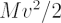
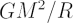
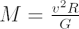

The virial theorem relates the total kinetic energy of a self-gravitating body due to the motions of its constituent parts, T to the gravitational potential energy, U of the body.
2T + U = 0
By re-arranging the above equation and making some simple assumptions about T(=

) and U(=
) for galaxies we obtain:
where M is the total mass of the galaxy, v is the mean velocity (combining the rotation and velocity dispersion) of stars in the galaxy, G is Newton’s gravitational constant and R is the effective radius (size) of the galaxy. This equation is extremely important, as it relates two observable properties of galaxies (velocity dispersion and effective half-light radius) to a fundamental, but unobservable, property – the mass of the galaxy. Consequently, the virial theorem forms the root of many galaxy scaling relations.
The comparison of mass estimates based on the virial theorem to estimates based on the luminosities of galaxies is one technique used by astronomers to detect the presence of dark matter in galaxies and clusters of galaxies.